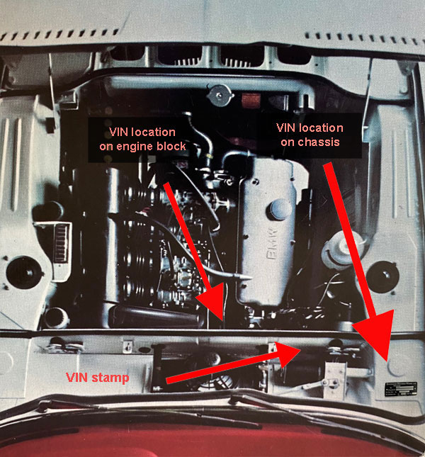
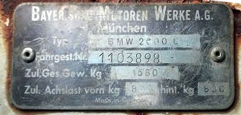
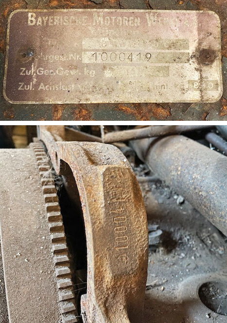
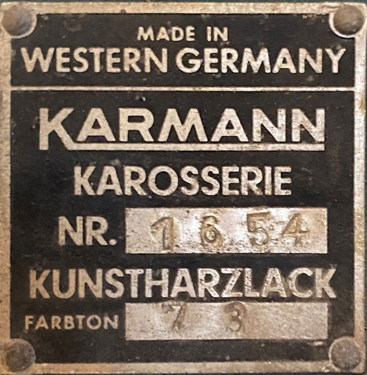

Typ120 VIN Number locations
The typ120 2000c/cs has a VIN tag in three places.
One is riveted to the chassis in the engine compartment just under the hood on the passenger side. It is easily noted. BMW universally stamped "BMW 2000 c" for all typ120s on the plates.
A second VIN number is stamped into the metal on the inside of the shelf in the engine compartment opposite the windshield wiper motor.
The third VIN stamp is on the back of the engine block just in front of where the transmission bell housing bolts to the engine on the driver's side. You'll need a flashlight and also maybe a wire brush to scrub off engine grime to read it.
There is a fourth tag or plate found on the "A" pillar near the door catch revealed when you open the driver's door. This is Karmann's tag noting body number and color. It does not have the VIN. See Below.

{kind=link}
An original VIN plate for a "110" CS
(BMW universally stamped "BMW 2000 c" for all typ120s)

A remanufactured chassis VIN plate for a 120 "C" relabled a CS
{kind=link}
Original VIN chassis plate and matching engine stamp for a 66 2000ca

VIN Stamp inside upper firewall shelf
{kind=link}
{kind=link}
VIN stamp on engine block
{kind=link}
{kind=link}
Karmann Production Plate

Karmann's tag noting body number and color on a turf green 1966 2000ca VIN# 1000419
Karosserie translates to "body" (1,654th body constructed by Karmann)
Kunstharzlack translates to "Synthetic resin lacquer" or type of paint
Farbton translates to "tint" (or color)
73 is the color code identified as "turf" (see typ120 color options)
This is Karmann’s chassis or body identification number. This car was the 1,654th body (chassis) completed by Karmann in Osnabrück to be then shipped the 397 miles (639 km) to Munich for final assembly.
This tag indicates the cars were not only constructed but also painted in Osnabrück. Karmann riveted its tag over a painted body.
This tag helps understand more about where other models might be in the production lineup. VIN 1000 419 translates to the 419th “CA” released off the assembly line in Munich.
There were only two “C” models produced in 65-66. That leaves 1,233 CS models or CS VIN #1001 233 should have “Karosserie NR. 1653 or 1655”.
It is not as easy to narrow down 1966 CA VINs due to lack of data from various registries, but with this body tag compared against more verifiable 66 CS VINs and a bit of math, one can conclude with some level of confidence that CA VIN 1000419 rolled off the assembly line in and around the same time CS VIN 1001 233 most likely in June 1966.
Special note on Synthetic resin lacquer paints
These were also called "thermoplastic acrylic lacquer", or "acryllic" or "single stage" finishes. Factories or paint shops would actually bake the paint with heat lamps after application.
Back in the day they had an excellent appearance and were the major automotive topcoat used in the 1950-70s. However, these lacquer topcoats did have one significant drawback: they had weak exterior durability. After about one to two years’ exposure, the coatings would begin to degrade, and aggressive waxing was needed to “bring back the shine” of these systems.
Remember the days of rubbing and polishing compound trying to bring back your acrylic paint? Remember that moment when you finally rubbed through to the white primer coat (on old BMWs)?